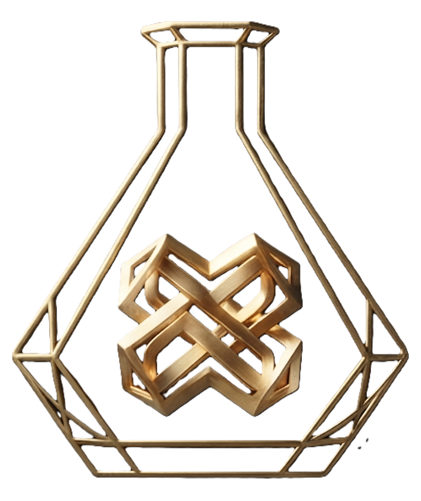

Александр фон Планта
«Хозяин»
Резидент, чья тень длиннее ночи.

Хавьер Абриль Монтеро
«Мастер»
Администратор теней и музыки.
Ольга
«Королева»
Та, кто держит нити судьбы.
Майя
«Пианистка»
Голос, который спасает от безумия.
Историческая справка
- Берн, 1946 год
- Палестина, 1947 год
- Геополитика теней

Комментарий эксперта
- Картина «Одуванчики»
- Папка Канариса
- Скрытые слои
Документы проекта
- Рапорт Мастера
- Докладная (Франция)
- Докладная (Италия)